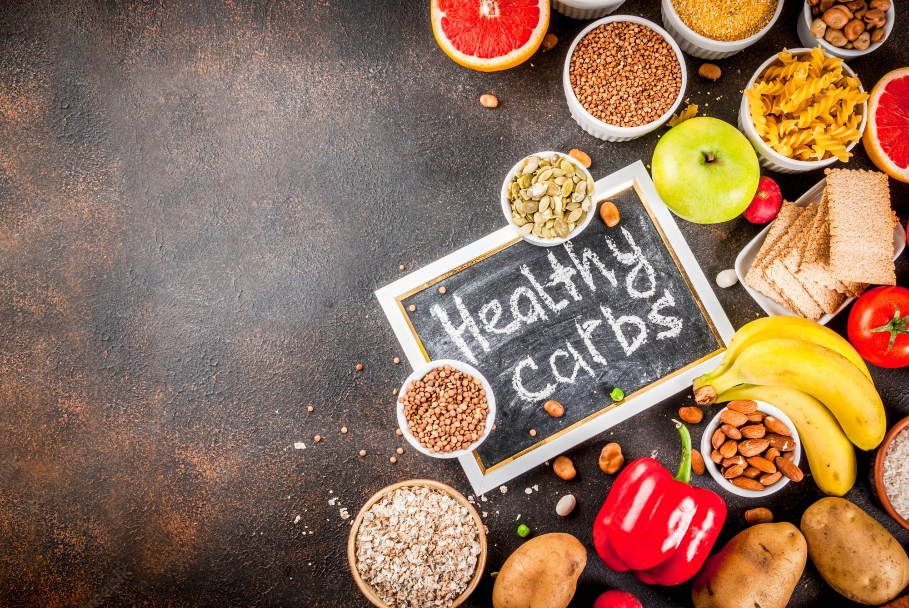
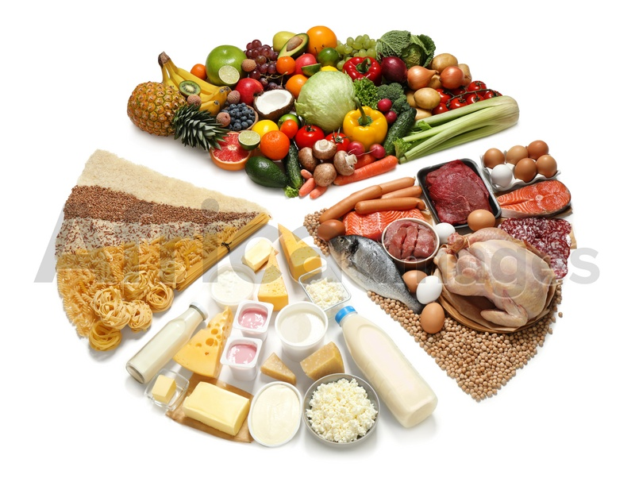
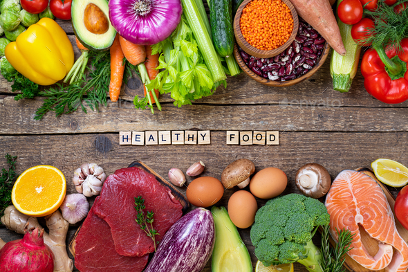
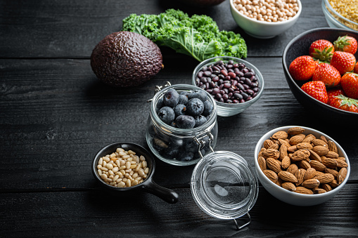
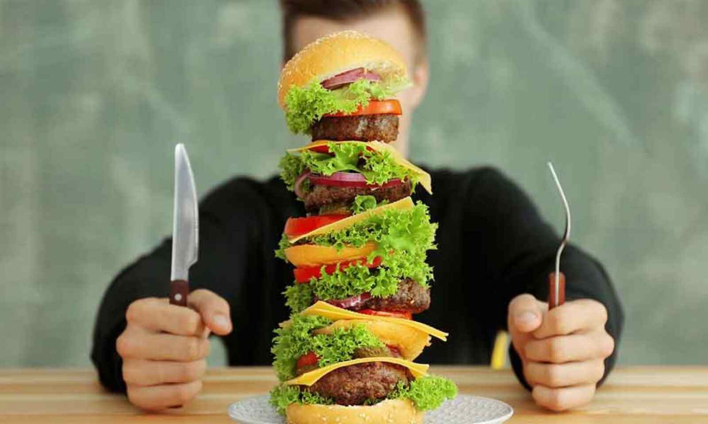

We have grown up listening to the term ‘balanced diet’ in science. It refers to a diet that has all the essential nutrients and minerals that will keep us healthy.
Having a balanced diet has been encouraged by our childhood. After all, it is important in keeping our health well.
A person intakes appropriate amounts of proteins, minerals, and nutrients in a balanced diet. It is quite necessary for the smooth functioning of our body.
If we consume a balanced diet regularly, we will always remain healthy. It lessens any chances of falling ill. Moreover, a balanced diet also boosts our immunity system.
Food is essential for our body for a number of reasons.
It gives us the energy needed for working, playing and doing day-to-day activities. It helps us to grow, makes our bones and muscles stronger, repairs damaged body cells and boosts our immunity against external harmful elements like pathogens. Besides, food also gives us a kind of satisfaction that is integral to our mental wellbeing, but there are some foods that are not healthy. Only those food items that contain nutrients in a balanced proportion are generally considered as healthy. People of all ages must be aware of the benefits of eating healthy food because it ensures a reasonably disease-free, fit life for many years.
Switching to a healthy diet doesn't have to be a one-size-fits-all approach. You don't have to be perfect, you don't have to eliminate all of your favourite foods and you don't have to make any drastic changes all at once—doing so frequently leads to straying or abandoning your new eating plan.
Making a few tiny modifications at a time is a recommended approach. Maintaining modest goals will help you achieve more in the long run without feeling deprived or overwhelmed by a very drastic diet change. Consider a healthy diet as a series of tiny, accessible actions such as including a salad in your diet once a day. You can slowly add additional healthy options as your minor modifications become habitual.
Importance of a Healthy Diet
Most people believe that a balanced diet is definitely the key to a healthy lifestyle. It is rightly believed as even scientists say so. When we always consume a balanced diet, we will maintain our physical as well as mental health. A balanced diet must contain the proper foods that are consumed in apt quantities. A perfect balanced diet is composed of carbohydrates, proteins, fats, minerals, high fiber content, vitamins, and more.
Living a healthy lifestyle has immense payback. Over time, making smart eating choices lowers your risk of cardiovascular disease, certain malignancies, type 2 diabetes, obesity, and even anxiety and depression. Daily, you will have more energy, feel better and possibly even be in a better mood.
It all boils down to how long and how good your life is. According to several surveys, A healthy diet consists of whole grains, vegetables, fruits, nuts, and fish. A higher diet of red or processed meats on the other hand doubled the chance of dying young.
Moreover, nowadays the trend of junk food is here to stay. People are not taking a balanced diet rather eating all sorts of harmful foods. It is more important than ever to tell people about the importance of a balanced diet. You cannot merely exercise and expect your body to stay fit. A balanced diet is crucial for that.
Most importantly, it is called a ‘balanced’ diet because it requires all the foods to be eaten in a balanced manner. For instance, if you intake large amounts of carbohydrates and a little amount of protein, then that will not be called a balanced diet, even if you are eating the right foods. The balance needs to be maintained for that.

How to Have a healthy diet
One can always adopt a healthy lifestyle by starting to consume a balanced diet. Firstly, one must definitely increase the amount of liquid to consume in a day. Fluids are very important for the human body to function healthily. As almost 80% of our body is filled with water, we need it for good metabolism. Thus, start with drinking at least two to three liters of water every day. Moreover, try cutting down on the consumption of tea, coffee, alcohol, and other such addictive liquids.
Furthermore, one must always eat fresh vegetables and fruits. As fresh fruits and vegetables are great sources of fiber and vitamins, we must consume them for good body growth. Try to avoid eating deep-fried or overcooked food as it loses all its nutrients. The balanced diet must have the five essential elements, i.e. bitter, sour, sweet, pungent and salty. Also, the emphasis is on fresh fruits because the processed or packed ones do not have nutrients.
Most importantly, always chew your food patiently. Do not just swallow it after chewing for four-five times. This way your food won’t get digested properly. Savor the food slowly and steadily. Next, do not eat in excess. You must know when to draw the line and stop when you don’t have the appetite. Therefore, we see how a balanced diet will keep you healthy and fit. It will improve the quality of your life and keep all the illnesses away.

Types of Healthy Food
Following are the various types of healthy foods and their respective nutritional value:
1) Cereals,potatoes,bread and other root vegetables- These are the main sources of carbohydrates. The calories obtained from them enable us to do work.
2) Pulses, milk and milk products, eggs, bird meat, animal meat in limited quantities - these are great sources of protein. They build muscles and repair the damaged cells of our body, i.e., they are important for our immunity.
3) Ghee, butter, nuts and dry fruits, edible oil used in restrained quantities- These are rich sources of good fat. They provide more energy to our body than carbohydrates but should be consumed in a smaller amount.
4) Fresh fruits, vegetables and leafy vegetables, fish, egg, milk-these are good sources of vitamins, minerals and antioxidants are essential for normal functioning of the body. Though they are needed in small amounts, nowadays, nutrition experts prescribe their higher consumption as they help to fight lifestyle diseases like diabetes, obesity and even cancer.
5) Different types of healthy food when included in our daily diet in the right proportions along with water and roughage comprise a balanced diet. However, a balanced diet is not the same for all individuals considering many factors. It depends on a person’s age, gender, condition of the body-healthy or suffering from any disease and the type of work or physical activity a human does.
Some people think that it does not matter they will die when their time is up no sooner. A person’s life is much better to be healthy instead of unhealthy. A person lives longer without health problems eating healthy. People have many misconceptions of healthy living. A person has a variety of healthy foods he or she can eat to remain healthy. Eating healthy is what a person needs to be healthy not just being skinny because that does not always mean a healthy person. Many people believe that they are healthy just because they are skinny. Just because a person is skinny does not make him/her healthy. Being healthy consist of eating the correct food for a person’s body. People can eat different type of food to remain healthy. The food pyramid outlines foods a person can eat to remain healthy. A person needs different types of food to be healthy. A person can eat red meats and in moderation. A person needs to have one to two servings of dairy products a day.
Several vegetables can be eaten for a person’s health. A person choosing vegetables, like corn, squash, peppers, cucumbers, etc., go for different colors, and varieties. Eating a variety of foods can prevent boredom when eating healthy. Not only are there different healthy vegetables one also needs to choose a healthy meat to eat. The different types of meat that is healthy for a person is white meat. Different types of white meat consist of chicken, fish, and even turkey. These types of meat can be very tasty when prepared correctly and do not have the fats found in red meats. Even though red meats are the most common meat, they are not healthy for the body. The most common red meat is beef. Some other unhealthy red meats are lamb and pork sausage. People who eat these meats are more prone to developing more heart problems. The fats in red meats cause the arteries to clog, which causes heart attacks and strokes. Red meats are not the only common food that a person needs to stay away from. People believe that sugar substitutes are a better version than sugar for them, although this is not true. A sugar substitute does not register in a person’s brain, which causes the brain to tell a person’s body one needs the carbohydrates. Everyone needs a certain amount of carbohydrates for a person’s body. Even though a person thinks sugar substitutes are better, sugar substitutes are not. The extra calories added when the body tells the person it needs the carbohydrates, which will add pounds, which is unhealthy for the person’s body. When the body has too many pounds from the extra calories from extra simple carbohydrates it stores complex carbohydrates in the body, which people need to stay away from some complex carbohydrates.

What is Unhealthy Food
To fully understand the prominence of healthy food in our diet, we must also be aware of unhealthy food, that is, the food that we must avoid eating. These are mainly junk food items which are low in nutritional value and contain an excessive amount of salt, sugar and fats which is not healthy for a human body.
Junk food is one of the unhealthy intakes in the present day scenario. It makes us more unfit than ever before. It is high time that one realised this and adopted a healthy food habit for a sustainable lifestyle.
Myths About Healthy Food:
1) Carrots affect eyesight: According to historic times, during World War II, there was a popular belief that eating a lot of veggies would assist maintain the pilot's eyes in good repair. In actuality, the fighter pilot's eyesight was aided by advanced technology. However, the myth has persisted since then and many parents still use this narrative to get their children to eat more veggies. Carrots are high in vitamin A and make a terrific supplement to any healthy diet, but they don't usually help you see better.
2) Fat-Free Food: Health foods continue to dominate grocery store shelves but it's always a good idea to look beyond the label before buying. This is especially true when it comes to "fat-free," "low-fat," and "non-fat" foods. It's generally true that anything with less fat is preferable for some dairy and meat items.
3) Lower fat alternatives in packaged and processed foods contain other dangerous additives as fat substitutes. Manufacturers compensate for the loss of fat in packaged cookies, for example, by adding other undesirable elements like sugar.
4) Protein shakes: Pre-made smoothie beverages and protein powder mixes which typically claim to contain less sugar than milkshakes, slushies and diet sodas are likely to be the popular choice among customers because of the above mentioned reason. They both have the same amount of sugar and artificial sweeteners.
5) However, this is not true of all pre-made protein shakes and smoothies. Many of them, particularly the plant-based mixtures, are still nutritious additions to a balanced diet. Check the nutrition label to be sure there are no added sugars or artificially sweetened mixtures.
6) Organic food is better: Foods that are grown organically are better for you. Nutritionists labelling a product as organic doesn't mean it's superior to non-organic foods. It's a popular misperception that organic produce is nutritionally superior to non-organic produce. Organic produce has the same caloric and nutritional value as non-organic produce since it is grown and prepared according to federal rules.